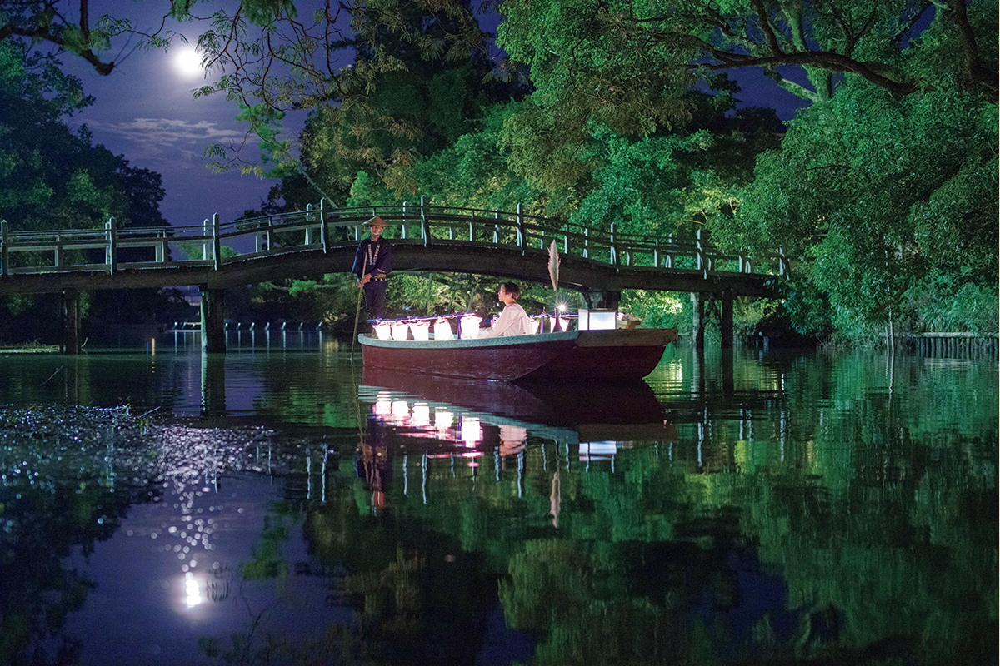
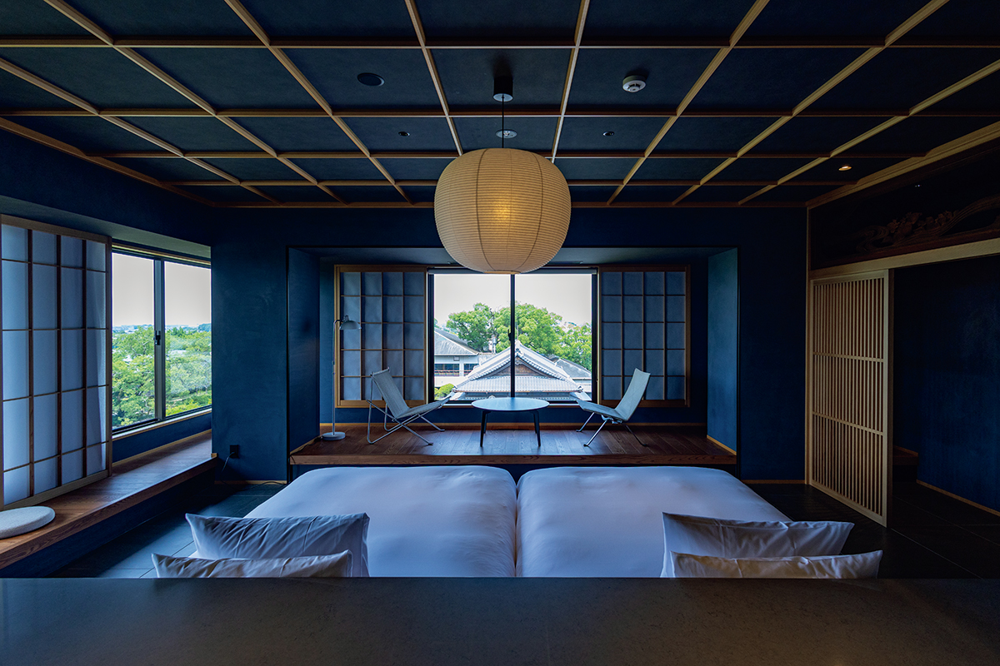
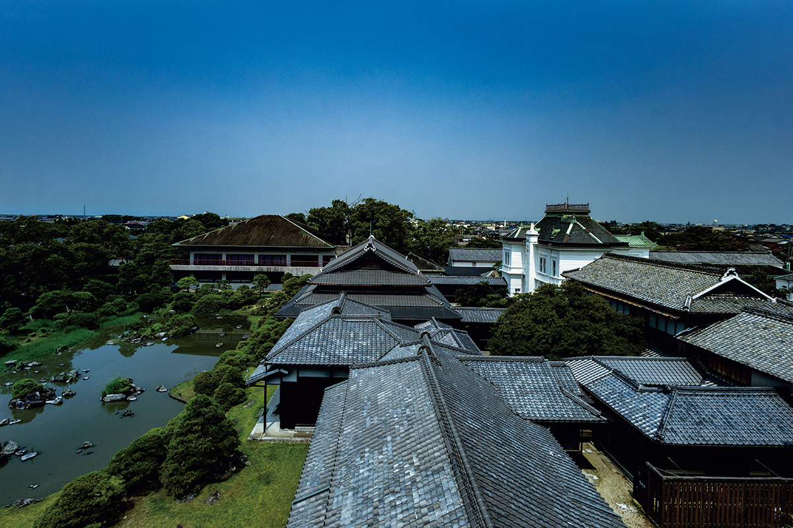
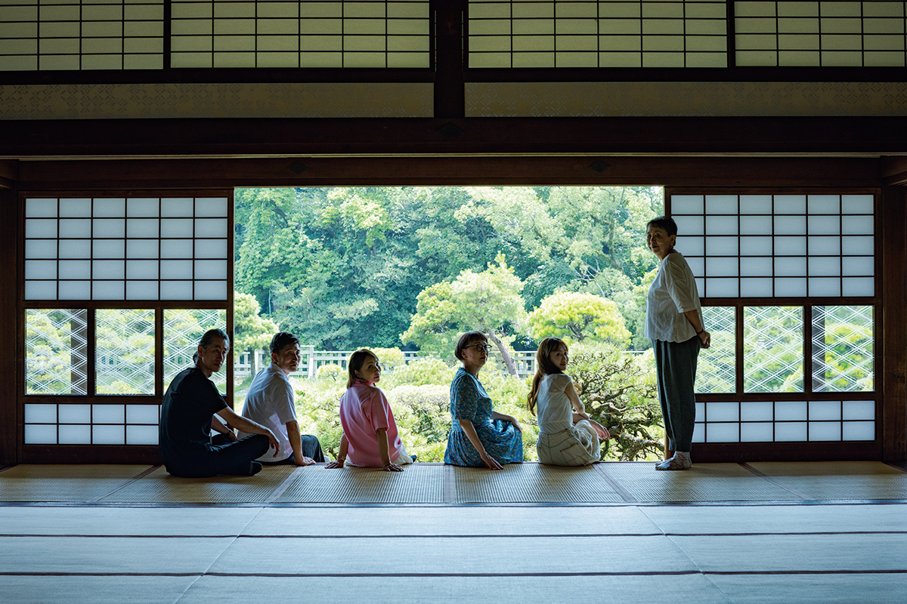
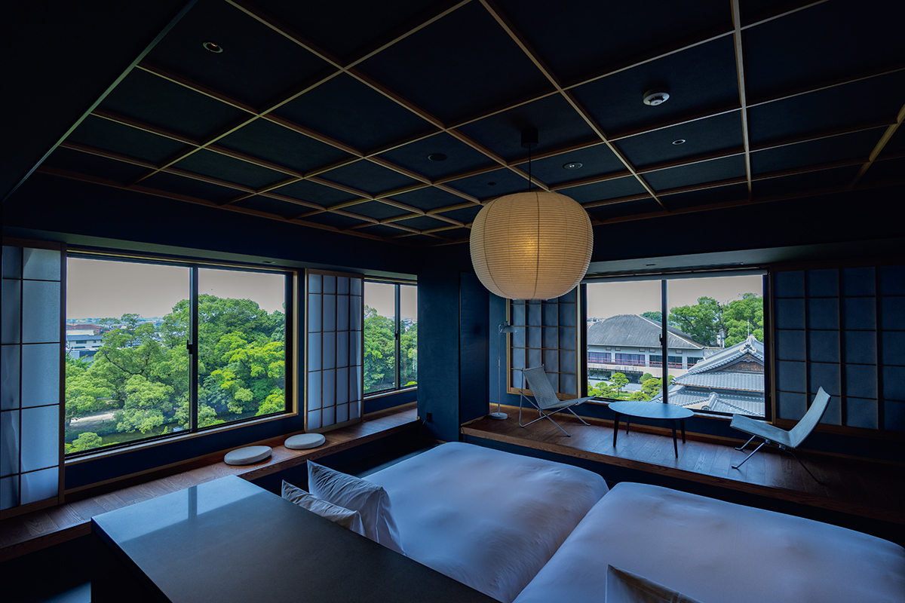
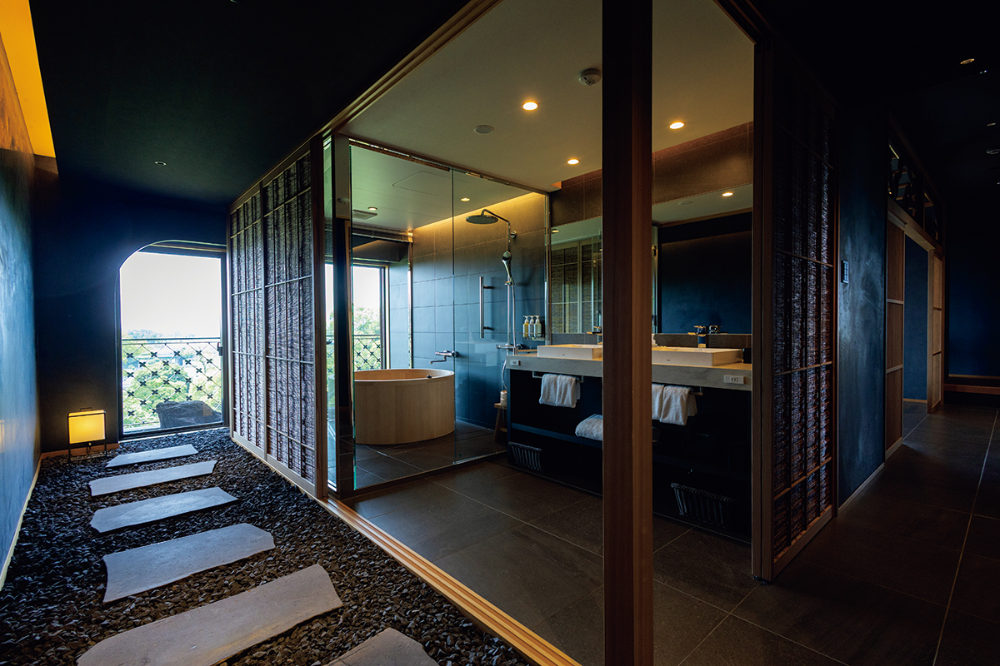
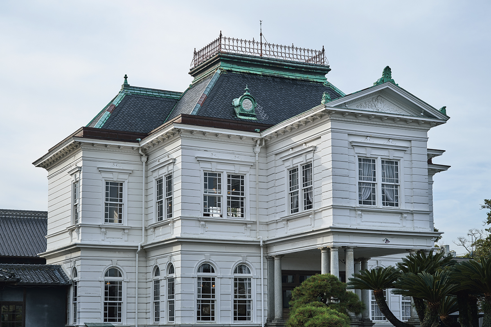
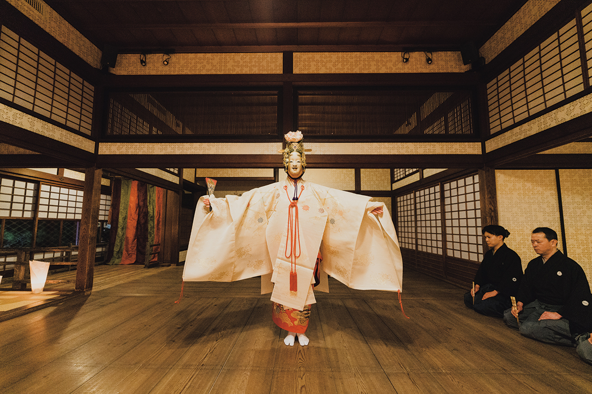
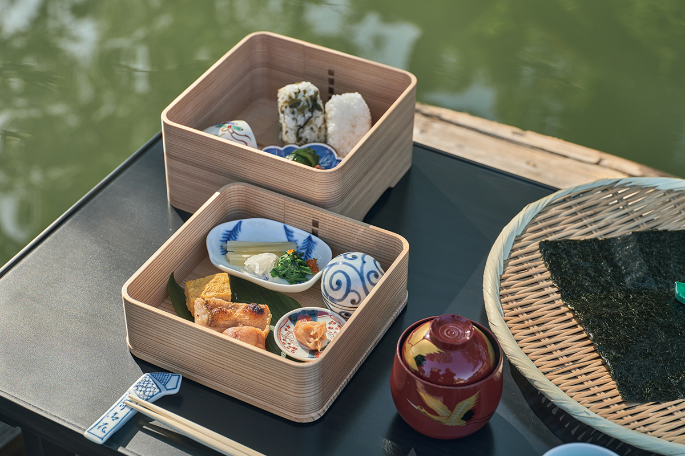

Префектура Фукуока · Янагава · рёкан
Ohana в Янагаве: ночь в усадьбе князей Татибана, которая сама стала памятником

В Янагаве, городе каналов на юге префектуры Фукуока, усадьба князей Татибана четыре века остаётся в руках одной семьи. Сегодня потомки правителей принимают здесь гостей на ночь, а сама усадьба целиком охраняется как национальный памятник.
Усадьба
Переночевать в памятнике
Янагаву называют городом на воде: по старым каналам здесь до сих пор ходят плоскодонки с лодочниками. В эпоху Эдо в городе жили правители княжества Янагава из рода Татибана, и их резиденция дошла до наших дней. Теперь это рёкан с рестораном японской кухни, который ведут потомки князей. Вся территория, около 2,3 гектара, признана государством живописным местом национального значения.

В январе 2025 года резиденция князей Татибана Ohana полностью обновила гостевой корпус, построенный сорок лет назад, и лобби. Работами руководила Тидзука Татибана, глава восемнадцатого поколения. Она средняя из трёх сестёр и к тому времени уже десять лет управляла домом, приняв дела от отца.

Перемены
Из места на полдня в место для ночёвки
Раньше в Ohana заезжали ненадолго: прокатиться по каналам и съесть угря, приготовленного на пару в деревянной коробке. Хозяйке было тревожно, что гости уходят, так и не поняв, чем ценна сама усадьба. Когда посетителей стало меньше, Ohana решила сделать ставку на культурный туризм.

Первым шагом стала идея сотрудников: завтрак в лодке. Фотографии разошлись по соцсетям, гостей с ночёвкой стало больше. В семье убедились, что раскрыть усадьбу можно только тем, кто задерживается надолго, и решились на большую перестройку.
«Мы думали о том, как гости будут смотреть на памятник прямо из номера»
Тидзука Татибана
Так появились номера с видом на наследие усадьбы, и самый эффектный из них «Куромацу», «Чёрная сосна». Сотрудники вместе прошли долгое обучение, и теперь каждый из них умеет рассказать об истории дома. Общая цель команды в том, чтобы и через сто лет эта усадьба оставалась местом, к которому люди возвращаются душой.


Журналистка, которая много лет пишет об отелях, назвала Ohana сокровищем Кюсю: по её словам, удивительно, что внутри классической японской усадьбы спрятано такое современное лобби. В 2025 году рёкан получил золотую награду премии JR Kyushu за развитие туризма на Кюсю в номинации «Гостеприимство», а в октябре 2026 года вошёл в гостиничную подборку «Гида Мишлен» 2026 года.
Наследие
Западный особняк и сцена но
Памятниками признаны и отдельные постройки: Западный особняк, жилые покои князей и другие здания. Посмотреть их могут не только гости рёкана. В Большом зале снова дают спектакли но. Сцена стоит внутри дома, поэтому зрители сидят совсем близко и видят танец в нескольких шагах.


На воде
Завтрак в лодке
Во время завтрака в лодке гость плывёт по утреннему каналу и чувствует себя князем. Кроме него, рёкан придумал прогулки на лодке для разных сезонов: летом под фейерверки, осенью под луну, зимой с рисовыми клёцками данго. Время и сезон меняются, и некоторые гости садятся в лодку три или четыре раза за год.

Ночь в Ohana с завтраком и ужином стоила от 39 500 иен с человека, включая налог и сервисный сбор, в 2025 году.
Резиденция князей Татибана Ohana
- Адрес
- префектура Фукуока, Янагава, Синхокамати, 1
- Телефон
- 0120-336-092 (бесплатный номер, звонки из Японии)
- Номера
- 20
- Заезд / выезд
- 15:00 / 11:00
- Цены / Вход
- ночь с завтраком и ужином от 39 500 иен (налог и сервисный сбор включены)
- Сайт
- ohana.co.jp
Фото: Хиромаса Оцука.